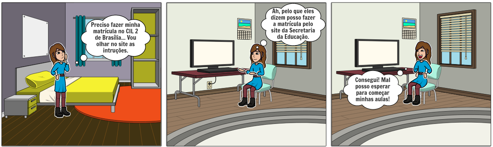
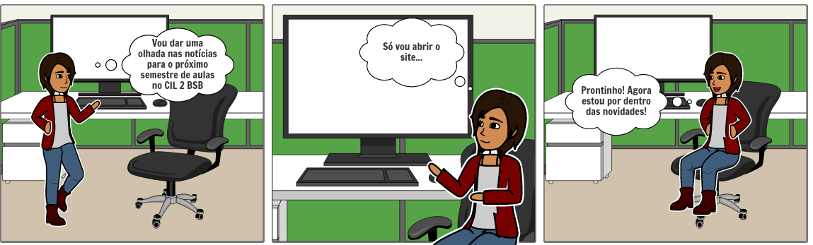

Storyboard
Histórico de Versões
| Data | Versão | Descrição | Autores | Revisor |
|---|---|---|---|---|
| 06/04/2021 | 0.1 | Criação do Documento | Gabriela Pivetta | Eduarda Servidio |
| 06/04/2021 | 0.2 | Elaboração da Introdução, Objetivo e Referências | Gabriela Pivetta | Eduarda Servidio |
| 07/04/2021 | 0.3 | Elaboração da Metodologia e Storyboards | Gabriela Pivetta | Eduarda Servidio |
| 07/04/2021 | 0.4 | Justificação dos textos | Eduarda Servidio | --------------- |
Introdução
Storyboards são um tipo de prototipação de baixa fidelidade, que consistem em uma série de desenhos em quadrinhos que mostram como um usuário pode progredir em uma tarefa utilizando o produto que está sendo estudado (ROGERS, et al.). O foco dos storyboards são as tarefas e os cenários, desse modo a parte estética fica em segundo plano.
Objetivo
O propósito de fazer um storyboard é demonstrar como as personas e futuros usuários podem usar o sistema em determinados ambientes/cenários, assim como as interações que podem ocorrer e os passos necessários para realizar uma determinada tarefa.
Metodologia
A partir das personas e suas tarefas previamente definidas foram criados storyboards, que ilustram possíveis usos do sistema. A ferramenta utilizada foi o site StoryboardThat.
Storyboards
Persona 1 (Primária)
| Nome | Idade | Ocupação | Objetivo | Tarefa | Expectativas |
|---|---|---|---|---|---|
| Ana Júlia Silva | 16 anos | Estudante | Começar a estudar uma nova língua | Descobrir mais informações a respeito do CIL2-BSB e eventualmente se matricular | Espera que o CIL2-BSB atenda suas necessidades e que o site permita realizar suas tarefas |
Após recentemente desenvolver interesse por línguas estrangeiras, Ana Júlia decidiu pesquisar por organizações que prestem esse tipo de serviço. Ao se deparar com o site do Centro Interescolar de Línguas, achou a proposta interessante, porém ainda não conhece maiores detalhes sobre. No momento, está tentando descobrir mais sobre o CIL2-BSB e aprender a utilizar o site.
Figura 1: Storyboard 1. Autor: Gabriela Pivetta
Persona 2 (Primária)
| Nome | Idade | Ocupação | Objetivo | Tarefa | Expectativas |
|---|---|---|---|---|---|
| Fernanda Siqueira | 17 anos | Estudante | Realizar a matricula no CIL2-BSB | Obter informações de como realizar a matricula no CIL2-BSB | Espera obter essas informações de forma clara e sucinta no site do CIL2-BSB |
Fernanda é uma estudante do ensino médio da rede pública do distrito federal e sabe da importância de se aprender um outro idioma para a sua melhor colocação no mercado de trabalho. Fernanda então resolve se matricular em uma das unidades do Centro Interescolar de línguas de Brasília, por uma questão de proximidade com a sua residência e com a sua casa, escolhe o CIL2-BSB. E para isto ela resolve entrar no site do CIL2-BSB para ter informações sobre como deve ocorrer a matrícula.
 Figura 2: Storyboard 2. Autor: Gabriela Pivetta
Persona 3 (Secundária)
| Nome | Idade | Ocupação | Objetivo | Tarefa | Expectativas |
|---|---|---|---|---|---|
| Milena Barbosa | 38 anos | Professora de língua inglesa no CIL2-BSB | Estar ciente de todas as possíveis notícias que envolvem o CIL2-BSB | Vizualizar novas notícias no site CIL2-BSB | Encontrar notícias no site do CIL2-BSB |
Milena Barbosa é professora de língua inglesa no Centro Interescolar de Línguas 02 de Brasília. Para ficar por dentro de todos os acontecimentos em seu trabalho, Milena gosta de ler notícias sobre o CIL2-BSB e seus alunos. Para isso, Milena frequentemente acessa o site do CIL2-BSB para verificar as atualizações nas notícias. Milena sempre espera encontrar notícias importantes por lá.
 Figura 3: Storyboard 3. Autor: Gabriela Pivetta
Referências Bibliográficas
Livro: BARBOSA, S. D. J.; SILVA, B. S. Interação Humano-Computador. 1ª edição, Rio de Janeiro: Elsevier, 2010.
Livro: ROGERS, Y. Et al. Design de Interação: Além da Interação Humano-Computador. 1ª edição: Bookman.